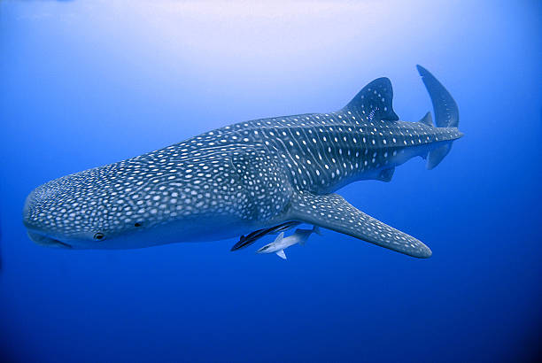

Requin baleine
Le requin baleine (Rhincodon typus) est le plus grand poisson vivant connu. Malgré sa taille impressionnante, il est paisible et se nourrit principalement de plancton, de krill et de petits poissons en filtrant l'eau.

Exploration calme des requins et petits QCM découverte
Clique sur une réponse pour découvrir un fait surprenant sur chaque requin.
Quelle particularité distingue les taches du requin baleine ?
Fun fact : Chaque requin baleine possède une constellation de points et de lignes unique, ce qui permet aux scientifiques d'identifier chaque individu par photo.
À quoi sert notamment la forme élargie de sa tête ?
Fun fact : L'écartement de ses yeux lui donne un champ visuel vertical très large, et ses capteurs électriques couvrent une plus grande surface de balayage.
Quel détail est fréquent chez les jeunes requins tigres ?
Fun fact : Les zébrures verticales du requin tigre sont bien plus marquées chez les jeunes et s'estompent progressivement en grandissant.
Comment le grand requin blanc garde-t-il ses muscles actifs en eau fraîche ?
Fun fact : Sa température corporelle peut être supérieure à celle de l'eau ambiante, ce qui l'aide à nager efficacement dans des eaux tempérées.
Que montrent les études scientifiques sur le comportement du requin citron ?
Fun fact : Les requins citrons ont fait l'objet d'études montrant une fidélité à certains sites côtiers et des préférences sociales durables entre individus.